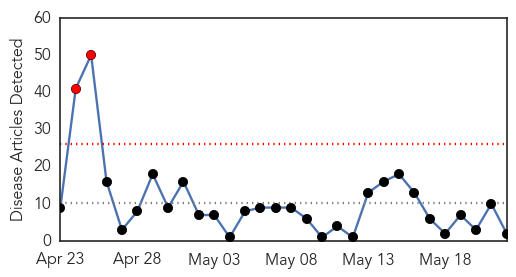
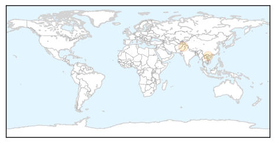
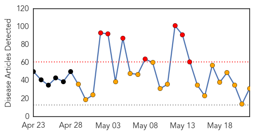
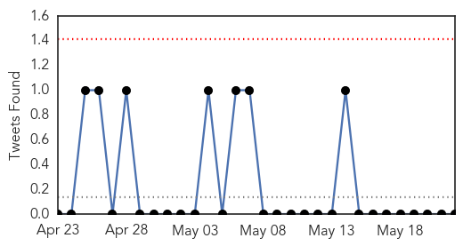
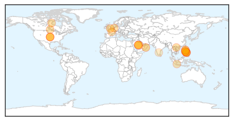
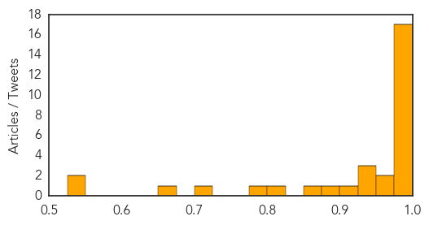

Measles
30-Day Web Trend
2 alerts, 0 warnings

30-Day Twitter Trend
0 alerts, 0 warnings

Article Locations
Article Confidences

Top Articles:
Top Tweets:
-
No tweets found for May 22, 2014
MERS
30-Day Web Trend
7 alerts, 17 warnings

30-Day Twitter Trend
0 alerts, 0 warnings

Article Locations
Article Confidences
Top Articles:
- 1.000
- Seven more with MERS
- 1.000
- Health says 86 samples test negative for MERS
- 0.999
- Middle East respiratory syndrome coronavirus (MERS-CoV) – update
- 0.999
- WHO: Third Case Of MERS-CoV Infection Reported In US
- 0.998
- SPECIAL REPORT-Saudi Arabia takes heat for spread of MERS virus
- 0.998
- Saudi Arabia reports 7 more MERS cases, 1 fatal
- 0.997
- Canadian agency calls for preventive equipment for MERS
- 0.997
- Vietnam health ministry warns of MERS-CoV spread
- 0.996
- Antibodies found to 'MERS' virus - Toll hits 105
- 0.996
- Stop MERS from coming here
- 0.995
- MERS-CoV infects four more in Saudi Arabia
- 0.995
- Health agency advises taking steps to prevent spread of MERS virus - Winnipeg
- 0.992
- MERS Watch: Saudi Cases Dwindle
- 0.991
- the edge of knowledge
- 0.983
- Deadly Middle East virus kills 2 more Filipinos
- 0.983
- Filipino nurse dies of coronavirus in Jeddah
- 0.982
- Two Filipinos die of MERS virus in Middle East: Gov't
- 0.965
- 2 more Pinoys die of MERS-CoV in Saudi Arabia
- 0.960
- Saudi- Cook camel meat well if you must eat
- 0.937
- MERS kills two more Pinoys in Saudi
- 0.936
- Shisha cafe culture may spread MERS faster
- 0.928
- Disease outbreak in Johor Baru prison, official says it's not Mers, SE Asia News & Top Stories
- 0.908
- Mers-Cov kills 2 more Filipino workers in Saudi Arabia
- 0.894
- RI ready to confront climate impact, MERS: Minister
- 0.857
- www.thecolumbiastar.com
- 0.807
- No evidence to suggest camels transmitting MERS, says Oman
- 0.799
- No evidence to suggest camels transmitting MERS, says Oman
- 0.720
- Saudi- Govt eyes foreign specialists to deal with MERS cases
- 0.664
- Centre Issued Alert on MERS-CoV Disease: Minister
- 0.549
- Forest company helps fight MERS outbreak
- 0.534
- US lab offers real time DNA testing of MERS-infected people
Top Tweets:
-
No tweets found for May 22, 2014